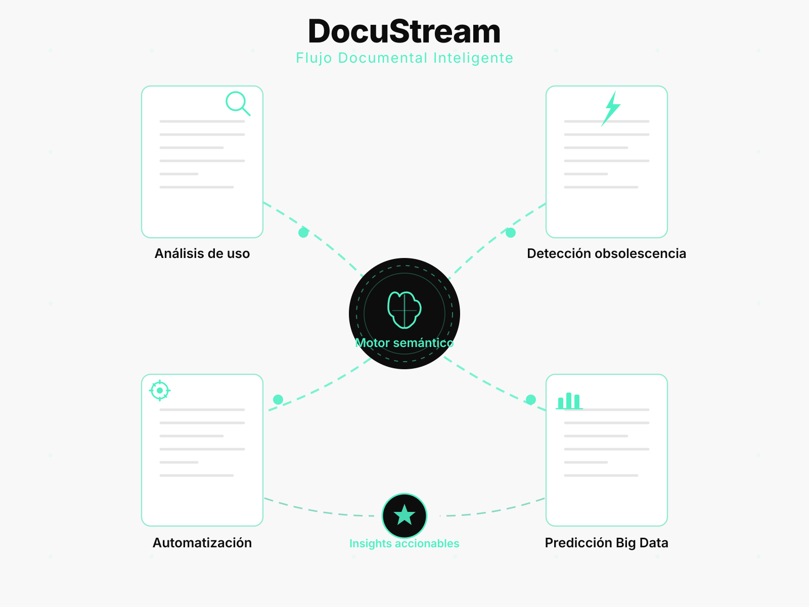

Documentación Viva impulsada por IA y Big Data
DocuStream automatiza, conecta y da vida a tus documentos con análisis inteligente, flujos dinámicos y predicción de obsolescencia.

La solución
DocuStream convierte la documentación en un sistema vivo: analiza uso real, detecta obsolescencia y genera insights accionables.
🔍 Análisis de uso
🧠 Grafo semántico
🔥 Heatmaps
⏳ Predicción
Cómo funciona
Conecta tu documentación
Importa tus documentos y procesos. DocuStream los analiza automáticamente.
El motor semántico detecta patrones
Identifica relaciones, uso real, obsolescencia y puntos críticos.
Recibe insights accionables
Recomendaciones inteligentes para mejorar procesos y reducir errores.
Tecnología DocuStream
IA Semántica
Comprende relaciones entre documentos y conceptos clave.
Big Data
Analiza uso real, patrones y métricas de comportamiento.
Grafos
Visualiza conexiones y dependencias entre procesos.
Automatización
Actualiza y alerta sobre cambios críticos en tiempo real.
Casos de uso
📚 Equipos de documentación
Detecta qué documentos están obsoletos y cuáles necesitan actualización.
⚙️ Equipos técnicos
Identifica dependencias críticas y reduce errores por documentación desactualizada.
🚀 Innovación y procesos
Analiza flujos reales y genera insights para optimizar procesos internos.
¿Por qué DocuStream?
¿Lista para transformar tu documentación?
DocuStream convierte tus documentos en un sistema vivo y conectado.
Ver demo PRO